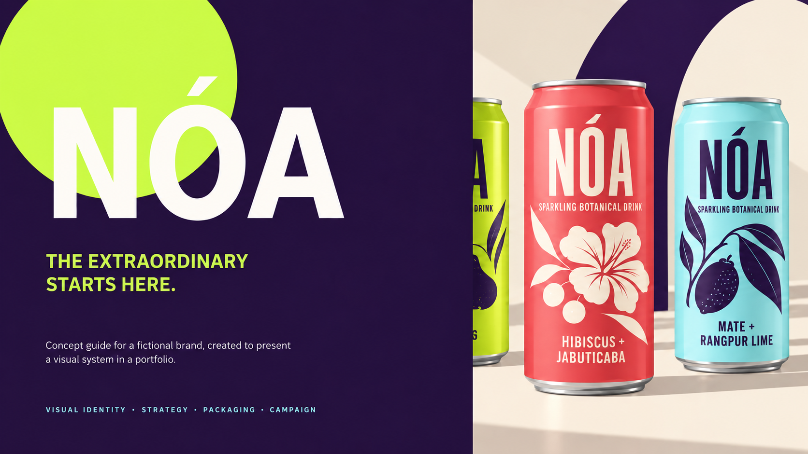
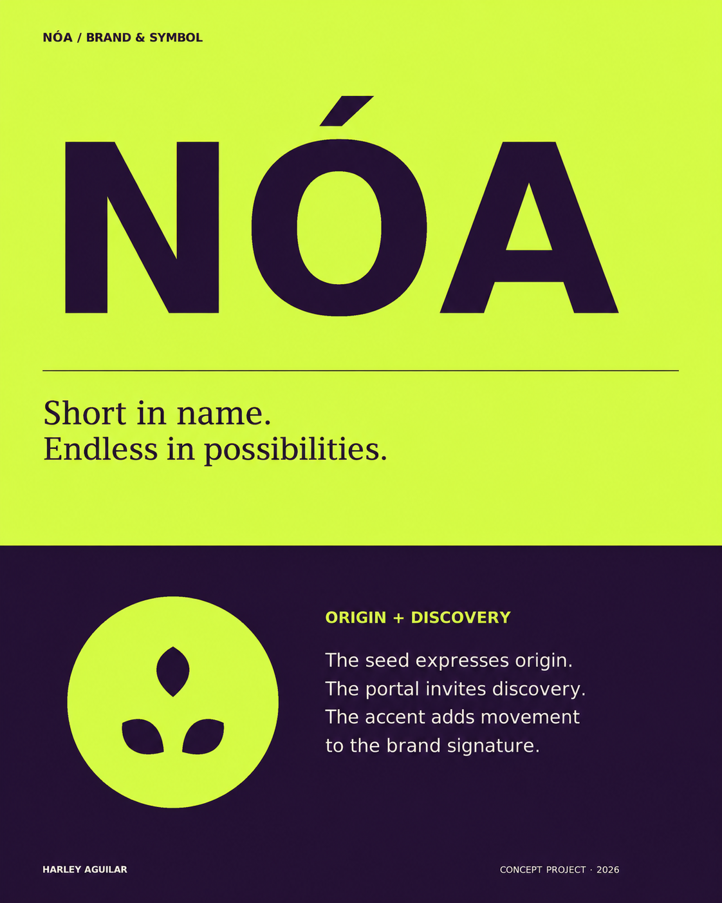
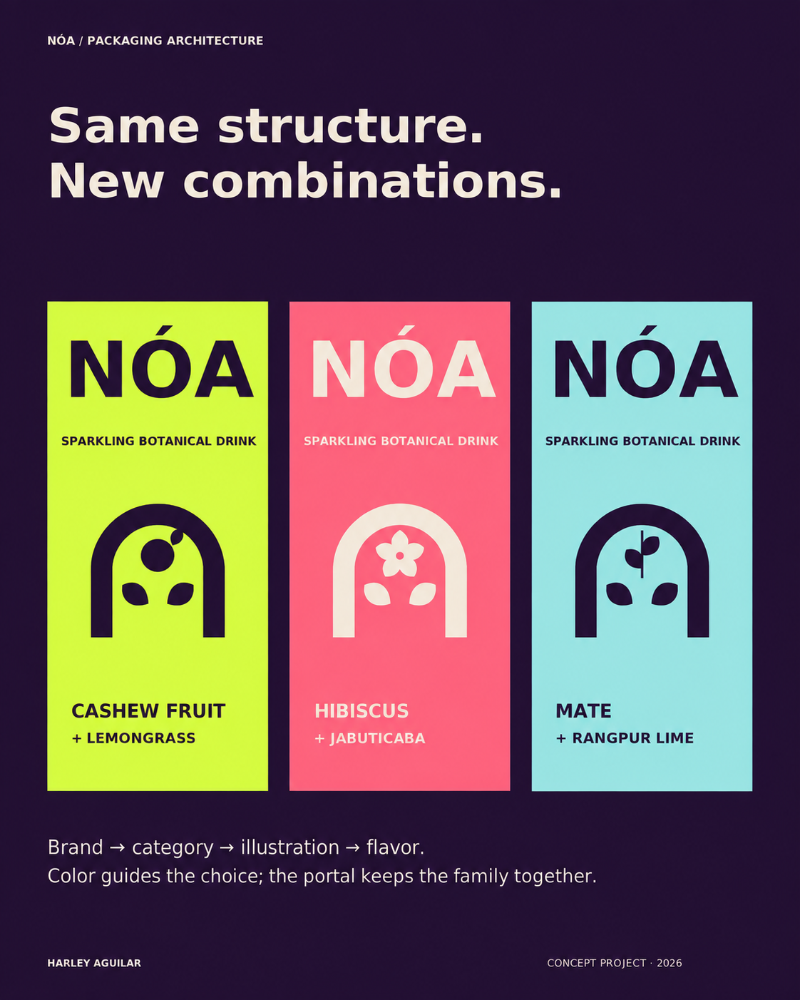
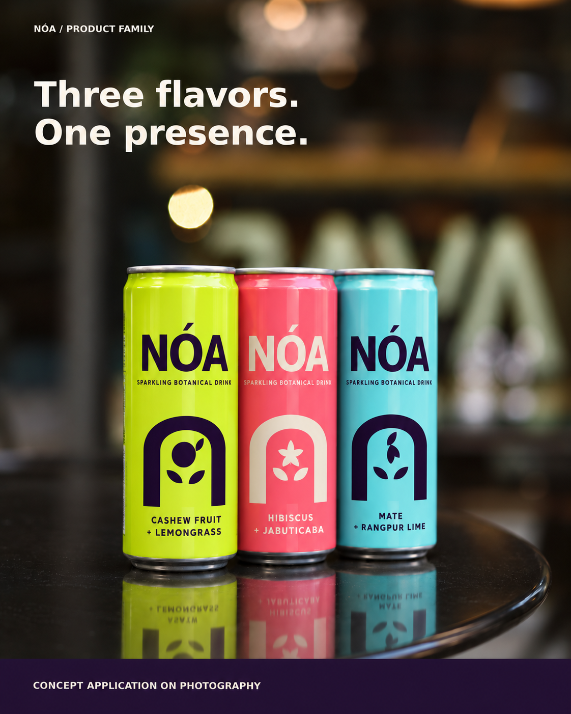
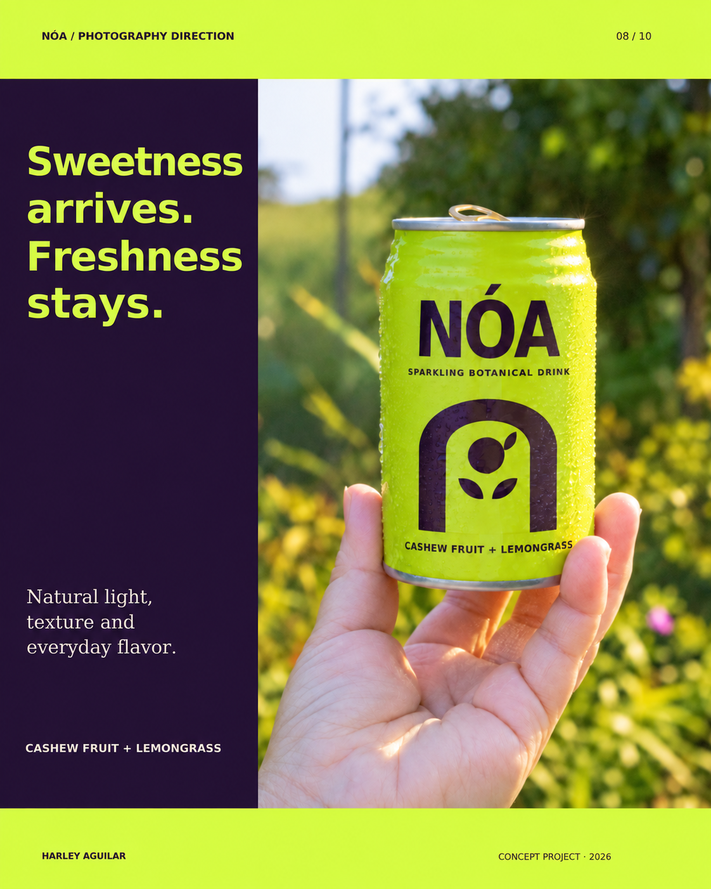
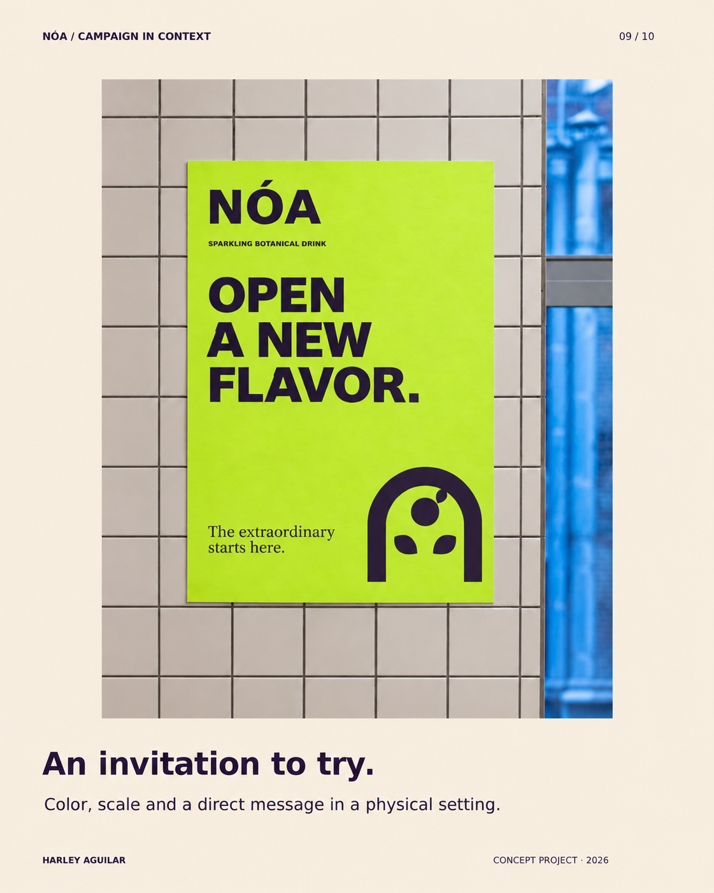
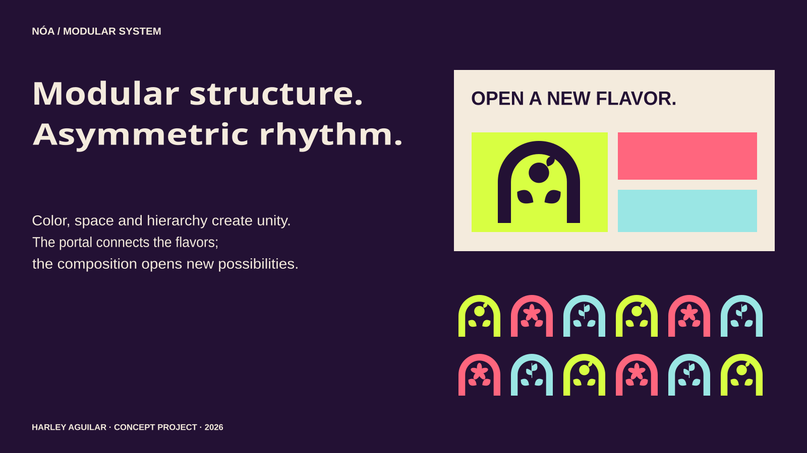
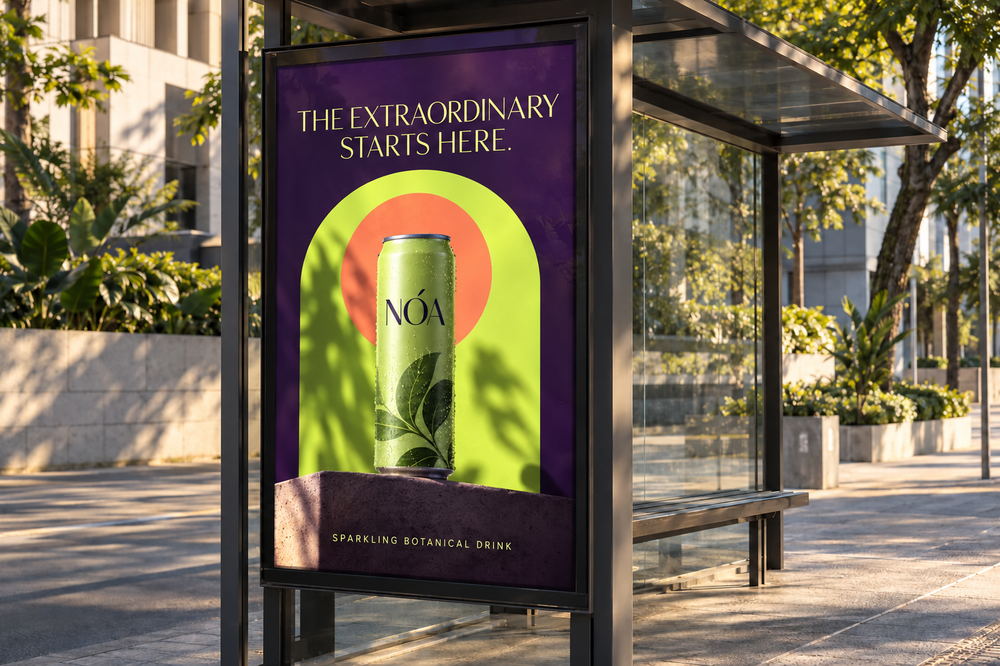
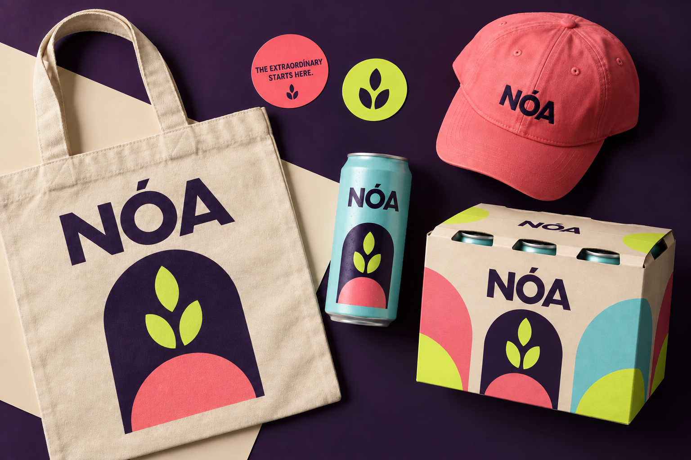

← All projects01 / Identity / Packaging
NÓA
Brazilian botanical drinks
A visual system balancing natural appeal, personality and recognition across every flavor.
Brand strategy · Naming · Identity · Packaging

01 / NÓA — The extraordinary starts here · Click to enlarge

02 / Brand and symbol — origin and discovery · Click to enlarge

03 / Packaging architecture — three combinations · Click to enlarge

04 / Product family — three flavors, one presence · Click to enlarge

05 / Photography direction — sweetness arrives, freshness stays · Click to enlarge

06 / Campaign in context — an invitation to try · Click to enlarge

07 / Composition and modular system · Click to enlarge

08 / Out-of-home campaign application · Click to enlarge

09 / Applications on packaging, a tote bag and a cap · Click to enlarge